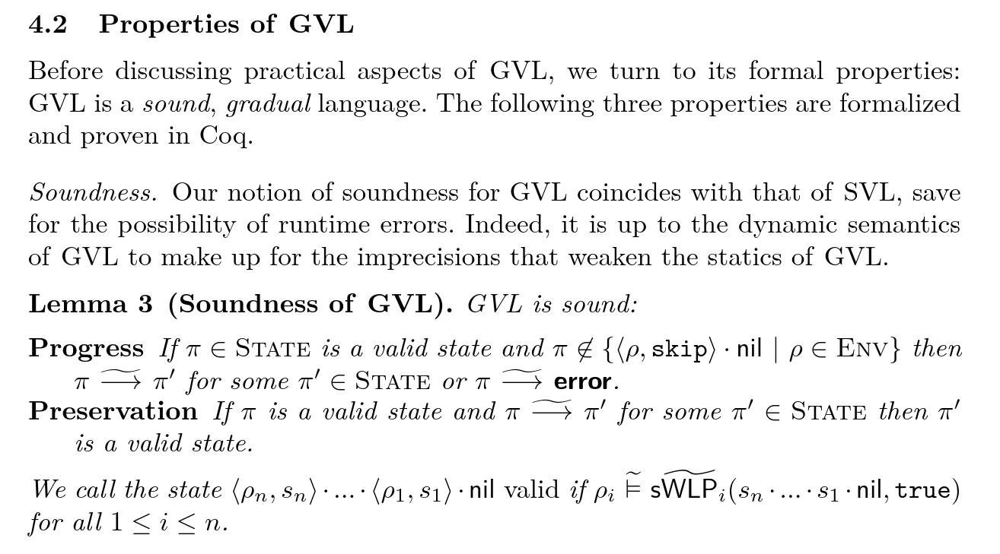

Jan-Paul Vincent Ramos-Dávila
Hi! I'm an undergrad at Cornell University working towards degrees in Computer Science and Philosophy. My main research goals involve developing practical tools for software verification in the general and domain-specific case through programming language theory.
I conduct research with Dr. Jonathan Aldrich and Dr. Joshua Sunshine and their doctoral students ( 1 | 2 ) on a verifier that leverages partial specifications for scalability in specification-driven verification at Carnegie Mellon University.
At Cornell, I am a part of the CAPRA research group led by Dr. Adrian Sampson and his doctoral students ( 1 | 2 ) on a compiler infrastructure for languages that target hardware accelerators.
I conduct research with Dr. Jonathan Aldrich and Dr. Joshua Sunshine and their doctoral students ( 1 | 2 ) on a verifier that leverages partial specifications for scalability in specification-driven verification at Carnegie Mellon University.
At Cornell, I am a part of the CAPRA research group led by Dr. Adrian Sampson and his doctoral students ( 1 | 2 ) on a compiler infrastructure for languages that target hardware accelerators.
Publications
* indicates equal contribution

Projects
